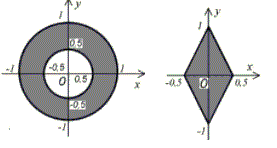
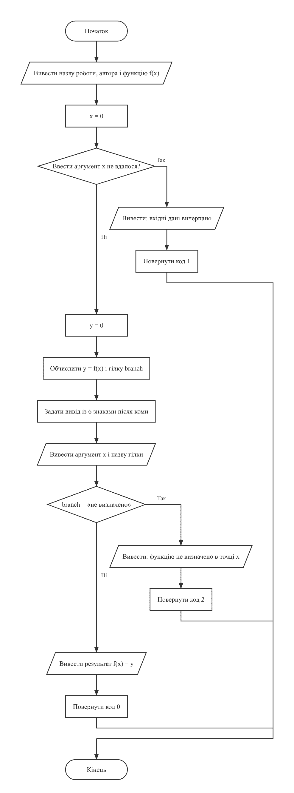
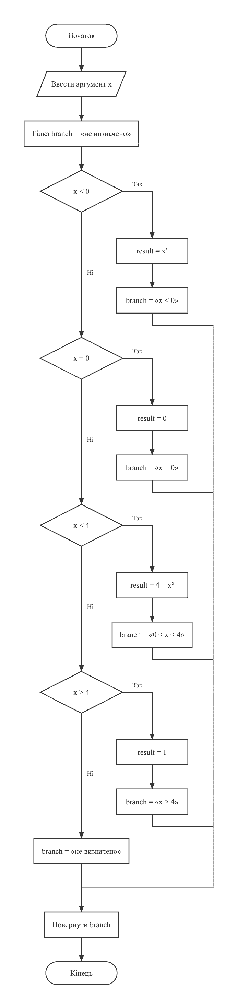
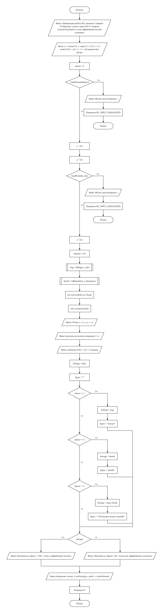
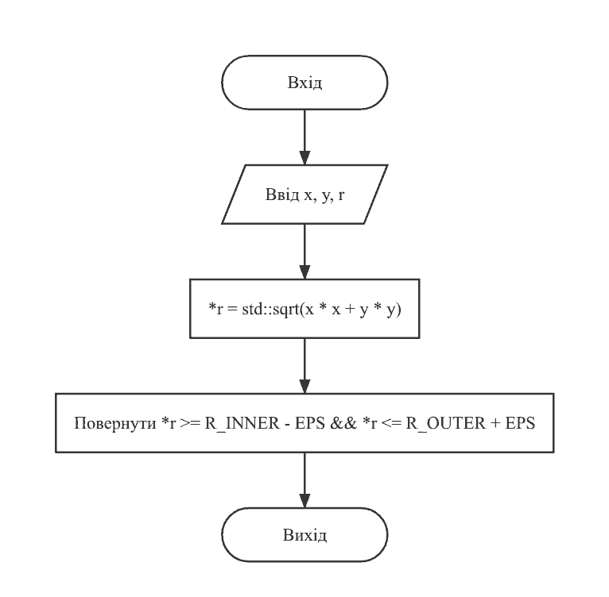
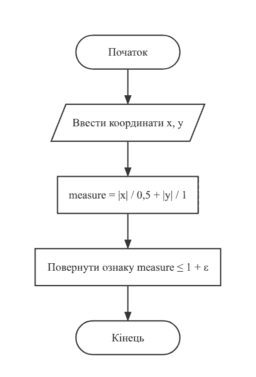
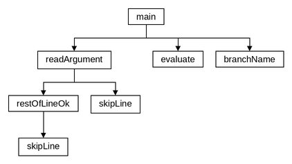
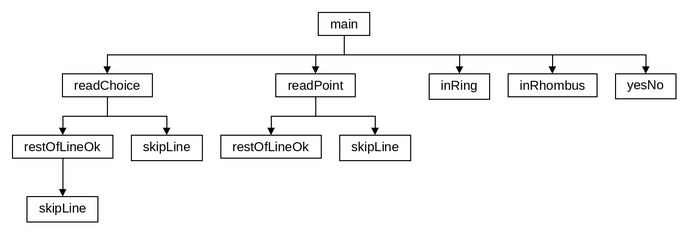
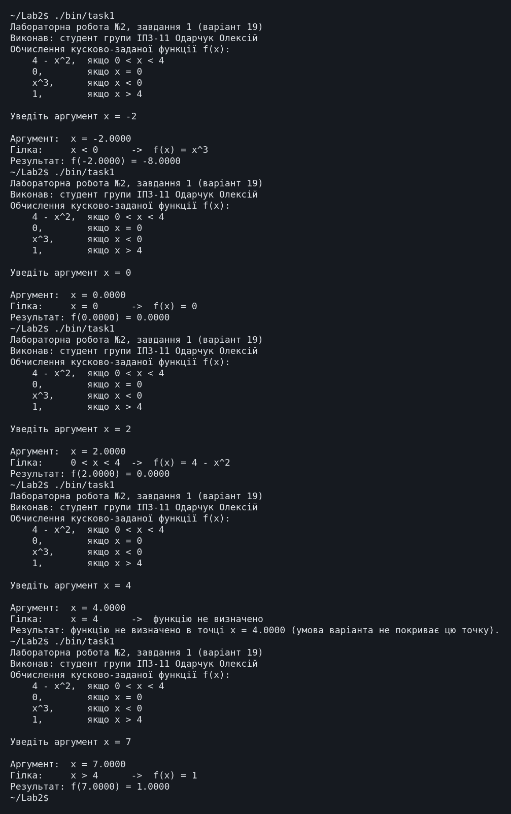
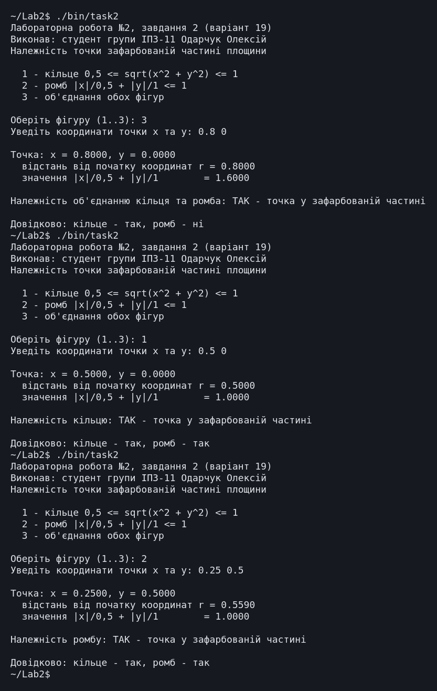

← До переліку лабораторних робіт
Лабораторна робота №2. Розгалужені обчислювальні процеси
Варіант 19. Виконав: Одарчук Олексій, КНУ імені Тараса Шевченка, ФІТ, група ІПЗ-11. C++17, g++
1. Мета роботи
- Вивчити особливості розгалужених обчислювальних процесів.
- Опанувати технологію використання логічних операторів.
2. Умова задачі
Завдання 1
Визначити значення функції залежно від значення її аргументу, який вводиться з клавіатури (таблиця 2.1, варіант 19):
| 4 - x², якщо 0 < x < 4
| 0, якщо x = 0
f(x) = | x³, якщо x < 0
| 1, якщо x > 4
Завдання 2
Увести з клавіатури дійсні числа x, y. Визначити, чи належить точка з координатами (x, y) зафарбованій частині площини (таблиця 2.2, варіант 19).

3. Аналіз задачі та теоретичне обґрунтування
Завдання 1
Умови варіанта задано нерівностями над дійсним числом, тому використано ланцюжок
if ... else if ... else (switch працює лише з цілим селектором).
Гілки перевіряються в порядку x < 0, x == 0,
x < 4, x > 4, тож кожна наступна умова не повторює
попередніх.
Інтервали задано строгими нерівностями 0 < x < 4 та
x > 4, тому точка x = 4 не належить жодній гілці. Функція
evaluate() повертає задіяну гілку (перелік Branch), а назва
гілки для протоколу береться з цього ж значення функцією branchName(), тож
умови записано в одному місці. Для гілки Branch::Undefined програма
повідомляє, що в цій точці функцію не визначено.
Контроль введення (readArgument(), readChoice(),
readPoint()): приймаються лише скінченні числа (nan та
inf відхиляються); після числа в рядку допускаються тільки пропуски або
наступне число, тому номер фігури й координати можна ввести одним рядком, а сторонні
символи (1abc, 0.5 0 zz) призводять до повторного запиту.
Завдання 2
На рисунку варіанта подано дві зафарбовані фігури.
Фігура 1 - кільце. Зафарбовано частину площини між двома концентричними колами з центром у початку координат: внутрішній радіус 0,5, зовнішній 1. Оскільки на рисунку межі суцільні, вони належать зафарбованій частині:
0,5 ≤ √(x² + y²) ≤ 1
Фігура 2 - ромб із вершинами (-0,5; 0), (0; 1), (0,5; 0), (0; -1). Ромб із півдіагоналями a = 0,5 по осі Ox та b = 1 по осі Oy описується канонічною нерівністю:
|x| / 0,5 + |y| / 1 ≤ 1, тобто 2·|x| + |y| ≤ 1
Програма визначає належність точки кільцю, ромбу або їх об'єднанню; фігуру обирають у меню
(оператор switch). Функції inRing() та
inRhombus() повертають ознаку належності й водночас обчислені величини
r та |x|/0,5 + |y|/1, які потім виводяться для перевірки, тож
кожна з них обчислюється один раз.
Порівняння виконується з допуском EPS = 1e-6, щоб точки на межі фігури не
відкидалися через похибку округлення. Тип float зберігає 6-7 значущих цифр,
тому менший допуск був би нижчим за похибку самого типу.
Вибір типів даних
| Змінні | Тип | Чому |
|---|---|---|
аргумент x і значення функції y (завдання 1); координати
x, y, величини r, measure,
константи R_INNER, R_OUTER, RHOMB_A,
RHOMB_B, EPS (завдання 2)
|
float |
результати виводяться з 4 знаками після коми, а float гарантує 6-7
значущих цифр
|
номер пункту меню choice |
short |
значення лише 1, 2 або 3 |
ознаки ring, rhomb, belongs |
bool |
логічні значення |
символ c у restOfLineOk() |
int |
peek() повертає int, зокрема значення кінця даних, яке не
є символом
|
Коди завершення RC_INPUT_EXHAUSTED і RC_UNDEFINED мають тип
int, бо це значення, яке повертає main().
Література: Ковалюк Т.В. Алгоритмізація та програмування. - Львів.: "Магнолія 2006", 2024. - 400 с.; Deitel P., Deitel H. C++ How to Program. Pearson Education, Inc. Hoboken, New Jersey. 2017. - 3015 p.
4. Блок-схема алгоритму





HIPO-діаграма показує ієрархію викликів функцій: зверху головна функція main(), стрілки ведуть до функцій, які вона викликає, нижче - функції, що викликаються з них; петля біля функції означає рекурсивний виклик. Діаграму побудовано за текстом програми.


Схеми побудовано за текстами програм у rombik (rombik.app) відповідно до ДСТУ 19.701-90 (ISO 5807). Структура кожної схеми точно відповідає коду функції, а блоки описують дії словами, як у методичних вказівках, без фрагментів коду.
5. Текст програми
Завдання 1 - task1.cpp
/*==============================================================================
task1.cpp. Лабораторна робота №2. Завдання 1. Варіант 19.
Тема: розгалужені обчислювальні процеси.
Умова: визначити значення функції залежно від значення її аргументу,
що вводиться з клавіатури (таблиця 2.1, варіант 19):
| 4 - x^2, 0 < x < 4
| 0, x = 0
f(x) = | x^3, x < 0
| 1, x > 4
Нерівності 0 < x < 4 та x > 4 строгі, тож точка x = 4 не належить жодній
гілці: для неї програма повідомляє, що функцію не визначено.
Виконав: Одарчук Олексій, КНУ імені Тараса Шевченка, ФІТ, група ІПЗ-11.
Компілятор: g++ -std=c++17
==============================================================================*/
#include <iostream>
#include <limits>
#include <cctype>
#include <cmath>
/* Гілка кусково-заданої функції, яку задіяно для аргументу x. */
enum class Branch
{
Negative, //x < 0 -> f(x) = x^3
Zero, //x = 0 -> f(x) = 0
Inner, //0 < x < 4 -> f(x) = 4 - x^2
Outer, //x > 4 -> f(x) = 1
Undefined //x = 4 -> не визначено
};
/* Коди завершення програми. */
const int RC_INPUT_EXHAUSTED = 1; //вхідні дані вичерпано (EOF)
const int RC_UNDEFINED = 2; //функцію не визначено в точці x
//============= evaluate: обчислити значення кусково-заданої функції f(x) ==============
/*
evaluate - обчислити значення кусково-заданої функції f(x).
Параметри:
x [вхідний] - аргумент функції;
result [вихідний] - адреса змінної для значення функції;
заповнюється для всіх гілок, крім Branch::Undefined.
Повертає: задіяну гілку функції; Branch::Undefined означає, що функцію
не визначено в точці x (x = 4).
Локальні змінні:
branch - гілка, яку задіяно для аргументу x.
Гілки реалізовано вкладеною конструкцією if ... else if ... else, оскільки
умови є діапазонними: оператор switch тут незастосовний, бо його
вираз-селектор не може належати до дійсного типу.
*/
Branch evaluate(float x, float *result)
{
Branch branch = Branch::Undefined; //гілка функції для x
if (x < 0.0f) //якщо x від'ємне
{
*result = x * x * x; //обчислити x^3
branch = Branch::Negative; //запам'ятати гілку x < 0
}
else if (x == 0.0f) //якщо x дорівнює нулю
{
*result = 0.0f; //задати нульове значення
branch = Branch::Zero; //запам'ятати гілку x = 0
}
else if (x < 4.0f) //якщо 0 < x < 4
{
*result = 4.0f - x * x; //обчислити 4 - x^2
branch = Branch::Inner; //запам'ятати гілку 0 < x < 4
}
else if (x > 4.0f) //якщо x > 4
{
*result = 1.0f; //задати значення 1
branch = Branch::Outer; //запам'ятати гілку x > 4
}
else //інакше x = 4
{
branch = Branch::Undefined; //залишається єдиний випадок x = 4
}
return branch; //повернути задіяну гілку
}
//================= branchName: текстова назва задіяної гілки функції ==================
/*
branchName - текстова назва задіяної гілки функції.
Використовується для протоколювання: показує, яка саме умова спрацювала.
Параметри: branch [вхідний] - гілка, яку повернула evaluate().
Повертає : рядок-константу з описом гілки.
*/
const char *branchName(Branch branch)
{
switch (branch) //вибрати опис за гілкою
{
case Branch::Negative:
return "x < 0 -> f(x) = x^3"; //повернути опис гілки
case Branch::Zero:
return "x = 0 -> f(x) = 0"; //повернути опис гілки
case Branch::Inner:
return "0 < x < 4 -> f(x) = 4 - x^2"; //повернути опис гілки
case Branch::Outer:
return "x > 4 -> f(x) = 1"; //повернути опис гілки
case Branch::Undefined:
break; //перейти до опису x = 4
default:
break; //вийти з перемикача
}
return "x = 4 -> функцію не визначено"; //повернути опис для x = 4
}
//========= skipLine: відкинути залишок рядка введення разом із символом '\n' ==========
/*
skipLine - відкинути залишок рядка введення разом із символом '\n'.
*/
void skipLine()
{
//відкинути символи до кінця рядка
std::cin.ignore(std::numeric_limits<std::streamsize>::max(), '\n');
}
//======= restOfLineOk: перевірити залишок рядка після успішно прочитаного числа =======
/*
restOfLineOk - перевірити залишок рядка після успішно прочитаного числа.
Припустимі лише пропуски до кінця рядка або до наступного числа (тоді воно
лишається в потоці для наступного запиту). Будь-який інший символ - помилка,
і решта рядка відкидається.
Повертає: true - залишок рядка коректний;
false - у рядку є сторонні символи (рядок відкинуто).
Локальні змінні:
c - черговий символ рядка (без вилучення з потоку).
*/
bool restOfLineOk()
{
int c = std::cin.peek(); //черговий символ рядка
while (c == ' ' || c == '\t' || c == '\r') //пропускати пропуски в рядку
{
std::cin.get(); //вилучити пропуск з потоку
c = std::cin.peek(); //переглянути наступний символ
}
if (c == '\n') //якщо рядок закінчився
{
std::cin.get(); //вилучити символ кінця рядка
return true; //повернути ознаку коректності
}
//якщо кінець даних або число
if (c == std::char_traits<char>::eof() || std::isdigit(c) || c == '-' || c == '+')
{
return true; //повернути ознаку коректності
}
skipLine(); //відкинути решту рядка
return false; //повернути ознаку помилки
}
//======= readArgument: прочитати дійсне число з контролем коректності введення ========
/*
readArgument - прочитати дійсне число з контролем коректності введення.
Приймаються лише скінченні числа (nan та inf відхиляються); після числа
в рядку не повинно бути сторонніх символів.
Параметри: x [вихідний] - адреса змінної для аргументу функції.
Повертає : true - число прочитано; false - вхідні дані вичерпано.
*/
bool readArgument(float *x)
{
std::cout << "Уведіть аргумент x = "; //вивести запрошення
for (;;) //повторювати до коректного введення
{
if (std::cin >> *x) //якщо число прочитано
{
if (std::isfinite(*x)) //якщо число скінченне
{
if (restOfLineOk()) //якщо залишок рядка коректний
{
return true; //повернути ознаку успіху
}
}
else //інакше (nan або inf)
{
skipLine(); //відкинути помилковий рядок
}
}
else //інакше (введено не число)
{
if (std::cin.eof()) //якщо вхідні дані вичерпано
{
return false; //повернути ознаку кінця даних
}
std::cin.clear(); //зняти прапорець помилки
skipLine(); //відкинути помилковий рядок
}
//вивести повідомлення про помилку
std::cout << "Помилка: очікується дійсне число. Повторіть: ";
}
}
//================================ головна функція main ================================
/*
Головна функція. Організовує введення аргументу, виклик обчислення
та виведення результату.
Локальні змінні:
x - аргумент функції, введений з клавіатури;
y - обчислене значення функції;
branch - гілка функції, задіяна для аргументу x.
*/
int main()
{
std::cout << "Лабораторна робота №2, завдання 1 (варіант 19)\n"
"Виконав: студент групи ІПЗ-11 Одарчук Олексій\n"
"Обчислення кусково-заданої функції f(x):\n"; //вивести назву роботи
std::cout << " 4 - x^2, якщо 0 < x < 4\n"
" 0, якщо x = 0\n"
" x^3, якщо x < 0\n"
" 1, якщо x > 4\n"
<< std::endl; //вивести визначення функції
float x = 0.0f; //аргумент функції
if (!readArgument(&x)) //якщо не вдалося ввести x
{
//повідомити про кінець даних
std::cout << "\nВхідні дані вичерпано." << std::endl;
return RC_INPUT_EXHAUSTED; //завершити з кодом помилки
}
float y = 0.0f; //значення функції
const Branch branch = evaluate(x, &y); //гілка функції, задіяна для x
/* Дійсні числа виводяться у фіксованому форматі з шістьма знаками. */
std::cout.setf(std::ios::fixed); //задати фіксований формат
//float гарантує 6-7 значущих цифр, тому 4 знаки після коми виводяться без шуму
std::cout.precision(4);
std::cout << "\nАргумент: x = " << x << std::endl; //вивести аргумент
//вивести задіяну гілку
std::cout << "Гілка: " << branchName(branch) << std::endl;
if (branch == Branch::Undefined) //якщо функцію не визначено
{
//повідомити, що функцію не визначено
std::cout << "Результат: функцію не визначено в точці x = " << x
<< " (умова варіанта не покриває цю точку)." << std::endl;
return RC_UNDEFINED; //завершити з кодом помилки
}
//вивести значення функції
std::cout << "Результат: f(" << x << ") = " << y << std::endl;
return 0; //завершити успішно
}
Завдання 2 - task2.cpp
/*==============================================================================
task2.cpp. Лабораторна робота №2. Завдання 2. Варіант 19.
Тема: розгалужені обчислювальні процеси.
Умова: увести з клавіатури дійсні числа x, y. Визначити, чи належить точка
з координатами (x, y) зафарбованій частині площини
(таблиця 2.2, варіант 19).
Опис фігур із рисунка варіанта.
Фігура 1 - кільце: зафарбовано частину площини між двома концентричними
колами з центром у початку координат, внутрішній радіус 0,5, зовнішній 1.
Межі кіл на рисунку суцільні, тобто належать зафарбованій частині:
0,5 <= sqrt(x^2 + y^2) <= 1.
Фігура 2 - ромб із вершинами (-0,5; 0), (0; 1), (0,5; 0), (0; -1).
Канонічне рівняння ромба з півдіагоналями a = 0,5 (по осі Ox)
та b = 1 (по осі Oy):
|x| / 0,5 + |y| / 1 <= 1, тобто 2*|x| + |y| <= 1.
Програма визначає належність точки кільцю, ромбу або їх об'єднанню;
фігуру обирають у меню (оператор switch).
Виконав: Одарчук Олексій, КНУ імені Тараса Шевченка, ФІТ, група ІПЗ-11.
Компілятор: g++ -std=c++17
==============================================================================*/
#include <iostream>
#include <limits>
#include <cctype>
#include <cmath>
/* Півдіагоналі ромба та радіуси кільця - константи умови варіанта. */
const float R_INNER = 0.5f; //внутрішній радіус кільця
const float R_OUTER = 1.0f; //зовнішній радіус кільця
const float RHOMB_A = 0.5f; //півдіагональ ромба по осі Ox
const float RHOMB_B = 1.0f; //півдіагональ ромба по осі Oy
/* Допуск для порівняння дійсних чисел: точка на самій межі фігури має
зараховуватись як така, що належить фігурі, попри похибку округлення.
Тип float зберігає 6-7 значущих цифр, тому допуск узято 1e-6. */
const float EPS = 1e-6f; //допуск порівняння дійсних чисел
/* Код завершення: вхідні дані вичерпано (EOF). */
const int RC_INPUT_EXHAUSTED = 1; //код завершення при EOF
//=================== inRing: чи належить точка кільцю 0,5 <= r <= 1 ===================
/*
inRing - чи належить точка кільцю 0,5 <= r <= 1.
Параметри:
x, y [вхідні] - координати точки;
r [вихідний] - адреса змінної для відстані від початку координат
до точки (обчислюється тут, щоб не рахувати двічі).
Повертає : true - точка належить кільцю (разом з межами).
*/
bool inRing(float x, float y, float *r)
{
*r = std::sqrt(x * x + y * y); //обчислити відстань до початку координат
//повернути ознаку належності кільцю
return *r >= R_INNER - EPS && *r <= R_OUTER + EPS;
}
//=============== inRhombus: чи належить точка ромбу |x|/a + |y|/b <= 1 ================
/*
inRhombus - чи належить точка ромбу |x|/a + |y|/b <= 1.
Параметри:
x, y [вхідні] - координати точки;
measure [вихідний] - адреса змінної для значення |x|/a + |y|/b.
Повертає : true - точка належить ромбу (разом з межами).
*/
bool inRhombus(float x, float y, float *measure)
{
//обчислити |x|/a + |y|/b
*measure = std::fabs(x) / RHOMB_A + std::fabs(y) / RHOMB_B;
return *measure <= 1.0f + EPS; //повернути ознаку належності ромбу
}
//========= skipLine: відкинути залишок рядка введення разом із символом '\n' ==========
/*
skipLine - відкинути залишок рядка введення разом із символом '\n'.
*/
void skipLine()
{
//відкинути символи до кінця рядка
std::cin.ignore(std::numeric_limits<std::streamsize>::max(), '\n');
}
//======= restOfLineOk: перевірити залишок рядка після успішно прочитаного числа =======
/*
restOfLineOk - перевірити залишок рядка після успішно прочитаного числа.
Припустимі лише пропуски до кінця рядка або до наступного числа (тоді воно
лишається в потоці для наступного запиту). Будь-який інший символ - помилка,
і решта рядка відкидається.
Повертає: true - залишок рядка коректний;
false - у рядку є сторонні символи (рядок відкинуто).
Локальні змінні:
c - черговий символ рядка (без вилучення з потоку).
*/
bool restOfLineOk()
{
int c = std::cin.peek(); //черговий символ рядка
while (c == ' ' || c == '\t' || c == '\r') //пропускати пропуски в рядку
{
std::cin.get(); //вилучити пропуск з потоку
c = std::cin.peek(); //переглянути наступний символ
}
if (c == '\n') //якщо рядок закінчився
{
std::cin.get(); //вилучити символ кінця рядка
return true; //повернути ознаку коректності
}
//якщо кінець даних або число
if (c == std::char_traits<char>::eof() || std::isdigit(c) || c == '-' || c == '+')
{
return true; //повернути ознаку коректності
}
skipLine(); //відкинути решту рядка
return false; //повернути ознаку помилки
}
//====================== readChoice: прочитати номер пункту меню =======================
/*
readChoice - прочитати номер пункту меню (1..3) з контролем введення.
Параметри: choice [вихідний] - адреса змінної для номера пункту.
Повертає : true - номер прочитано; false - вхідні дані вичерпано.
*/
bool readChoice(short *choice)
{
std::cout << "Оберіть фігуру (1..3): "; //вивести запрошення
for (;;) //повторювати до коректного введення
{
if (std::cin >> *choice) //якщо номер прочитано
{
//якщо рядок і номер коректні
if (restOfLineOk() && *choice >= 1 && *choice <= 3)
{
return true; //повернути ознаку успіху
}
}
else //інакше (введено не число)
{
if (std::cin.eof()) //якщо вхідні дані вичерпано
{
return false; //повернути ознаку кінця даних
}
std::cin.clear(); //зняти прапорець помилки
skipLine(); //відкинути помилковий рядок
}
//вивести повідомлення про помилку
std::cout << "Помилка: потрібне число 1, 2 або 3. Повторіть: ";
}
}
//======= readPoint: прочитати координати точки з контролем коректності введення =======
/*
readPoint - прочитати координати точки з контролем коректності введення.
Приймаються лише скінченні числа (nan та inf відхиляються); після другої
координати в рядку не повинно бути сторонніх символів.
Параметри: x, y [вихідні] - адреси змінних для координат точки.
Повертає : true - координати прочитано; false - вхідні дані вичерпано.
*/
bool readPoint(float *x, float *y)
{
std::cout << "Уведіть координати точки x та y: "; //вивести запрошення
for (;;) //повторювати до коректного введення
{
if (std::cin >> *x >> *y) //якщо обидві координати прочитано
{
if (std::isfinite(*x) && std::isfinite(*y)) //якщо координати скінченні
{
if (restOfLineOk()) //якщо залишок рядка коректний
{
return true; //повернути ознаку успіху
}
}
else //інакше (nan або inf)
{
skipLine(); //відкинути помилковий рядок
}
}
else //інакше (введено не число)
{
if (std::cin.eof()) //якщо вхідні дані вичерпано
{
return false; //повернути ознаку кінця даних
}
std::cin.clear(); //зняти прапорець помилки
skipLine(); //відкинути помилковий рядок
}
//вивести повідомлення про помилку
std::cout << "Помилка: очікуються два дійсних числа. Повторіть: ";
}
}
//================= yesNo: слово "так" або "ні" для логічного значення =================
/*
yesNo - слово "так" або "ні" для логічного значення.
Параметри: value [вхідний] - логічне значення.
Повертає : рядок-константу "так" або "ні".
*/
const char *yesNo(bool value)
{
if (value) //якщо значення істинне
{
return "так"; //повернути слово так
}
return "ні"; //повернути слово ні
}
//================================ головна функція main ================================
/*
Головна функція. Виводить меню вибору фігури, читає координати точки
та повідомляє результат перевірки.
Локальні змінні:
choice - номер пункту меню, обраний користувачем;
x, y - координати точки;
r - відстань від початку координат до точки;
measure - значення |x|/0,5 + |y|/1 для точки;
ring - ознака належності точки кільцю;
rhomb - ознака належності точки ромбу;
belongs - ознака належності точки обраній фігурі;
figure - назва обраної фігури для повідомлення.
*/
int main()
{
//вивести назву роботи
std::cout << "Лабораторна робота №2, завдання 2 (варіант 19)\n"
"Виконав: студент групи ІПЗ-11 Одарчук Олексій\n"
"Належність точки зафарбованій частині площини\n\n";
std::cout << " 1 - кільце 0,5 <= sqrt(x^2 + y^2) <= 1\n"
" 2 - ромб |x|/0,5 + |y|/1 <= 1\n"
" 3 - об'єднання обох фігур\n"
<< std::endl; //вивести меню фігур
short choice = 0; //номер пункту меню
if (!readChoice(&choice)) //якщо не вдалося ввести номер
{
//повідомити про кінець даних
std::cout << "\nВхідні дані вичерпано." << std::endl;
return RC_INPUT_EXHAUSTED; //завершити з кодом помилки
}
float x = 0.0f; //абсциса точки
float y = 0.0f; //ордината точки
if (!readPoint(&x, &y)) //якщо не вдалося ввести точку
{
//повідомити про кінець даних
std::cout << "\nВхідні дані вичерпано." << std::endl;
return RC_INPUT_EXHAUSTED; //завершити з кодом помилки
}
float r = 0.0f; //відстань до початку координат
float measure = 0.0f; //значення |x|/0,5 + |y|/1
const bool ring = inRing(x, y, &r); //ознака належності кільцю
const bool rhomb = inRhombus(x, y, &measure); //ознака належності ромбу
/* Дійсні числа виводяться у фіксованому форматі з чотирма знаками. */
std::cout.setf(std::ios::fixed); //задати фіксований формат
std::cout.precision(4); //задати чотири знаки після коми
//вивести координати точки
std::cout << "\nТочка: x = " << x << ", y = " << y << std::endl;
//вивести відстань r
std::cout << " відстань від початку координат r = " << r << std::endl;
//вивести значення для ромба
std::cout << " значення |x|/0,5 + |y|/1 = " << measure << std::endl;
bool belongs = false; //ознака належності обраній фігурі
const char *figure = ""; //назва обраної фігури
/* Поліваріантний вибір: кожна гілка завершується оператором break,
інакше керування "провалилося" б у наступну гілку. */
switch (choice) //вибрати фігуру за номером
{
case 1: //якщо обрано кільце
belongs = ring; //взяти належність кільцю
figure = "кільцю"; //задати назву фігури
break; //вийти з перемикача
case 2: //якщо обрано ромб
belongs = rhomb; //взяти належність ромбу
figure = "ромбу"; //задати назву фігури
break; //вийти з перемикача
case 3: //якщо обрано об'єднання
belongs = ring || rhomb; //обчислити належність об'єднанню
figure = "об'єднанню кільця та ромба"; //задати назву фігури
break; //вийти з перемикача
default: //інших номерів readChoice() не повертає
break; //вийти з перемикача
}
if (belongs) //якщо точка належить фігурі
{
//вивести позитивну відповідь
std::cout << "\nНалежність " << figure << ": ТАК - точка у зафарбованій частині"
<< std::endl;
}
else //якщо точка поза фігурою
{
//вивести негативну відповідь
std::cout << "\nНалежність " << figure
<< ": НІ - точка поза зафарбованою частиною" << std::endl;
}
std::cout << "\nДовідково: кільце - " << yesNo(ring) << ", ромб - " << yesNo(rhomb)
<< std::endl; //вивести довідкові ознаки
return 0; //завершити успішно
}
6. Результати виконання роботи
Компіляція: make (g++ -std=c++17, прапорці
-Wall -Wextra -pedantic -O2). Попереджень компілятора немає.
Нижче наведено екранні копії повних прогонів програм: кожна починається з запуску програми, містить усе введення з клавіатури й увесь вивід до завершення роботи. Прогін, що не вміщується на один екран, подано кількома послідовними частинами. Протоколи всіх прогонів, зокрема додаткових наборів вхідних даних, винесено окремими файлами за посиланнями.

Повний протокол виконання (task1.txt) (повний протокол, 104 рядків)

Повний протокол виконання (task2.txt) (повний протокол, 159 рядків)
7. Аналіз достовірності результатів
Достовірність результатів перевірено аналітично: значення функції обчислено вручну для кожної гілки, а належність точок фігурам - підстановкою координат у нерівності кільця 0,5 ≤ √(x²+y²) ≤ 1 та ромба |x|/0,5 + |y|/1 ≤ 1. Для кожної контрольної величини поруч із розрахунком наведено результат програми.
Завдання 1 - перевірка кожної гілки
| x | Задіяна гілка | Аналітичний розрахунок | Результат програми |
|---|---|---|---|
| -2 | x < 0 | (-2)³ = -8 | -8,0000 |
| -0,5 | x < 0 | (-0,5)³ = -0,125 | -0,1250 |
| 0 | x = 0 | 0 | 0,0000 |
| 2 | 0 < x < 4 | 4 - 2² = 0 | 0,0000 |
| 3,9 | 0 < x < 4 | 4 - 15,21 = -11,21 | -11,2100 |
| 4 | - | не визначено умовою | повідомлення "функцію не визначено в точці x = 4.0000" |
| 7 | x > 4 | 1 | 1,0000 |
Задіяно всі чотири гілки та точку x = 4; обчислені значення збігаються з ручним розрахунком.
Завдання 2 - перевірка на характерних точках
| Точка (x; y) | r = √(x²+y²) | |x|/0,5 + |y| | Кільце (аналітично) | Ромб (аналітично) | Результат програми |
|---|---|---|---|---|---|
| (0,8; 0) | 0,8000 | 1,6000 | так (0,5 ≤ 0,8 ≤ 1) | ні (1,6 > 1) | кільце - так, ромб - ні |
| (0,1; 0,1) | 0,1414 | 0,3000 | ні (0,1414 < 0,5) | так (0,3 ≤ 1) | кільце - ні, ромб - так |
| (0; 0,9) | 0,9000 | 0,9000 | так | так | кільце - так, ромб - так |
| (0,9; 0,9) | 1,2728 | 2,7000 | ні (> 1) | ні | кільце - ні, ромб - ні |
| (0,5; 0) - межа кільця | 0,5000 | 1,0000 | так (точно на межі) | так (точно на межі) | кільце - так, ромб - так |
| (0,25; 0,5) - межа ромба | 0,5590 | 1,0000 | так | так (точно на межі) | кільце - так, ромб - так |
Точки (0,5; 0) і (0,25; 0,5) лежать на межах кільця та ромба; обидві зараховано як належні, що відповідає суцільним межам на рисунку.
8. Висновки
-
Кусково-задану функцію обчислено ланцюжком
if ... else if ... else, вибір фігури реалізовано операторомswitch. -
Точку
x = 4, не покриту умовою, оброблено окремо: програма повідомляє, що функцію в ній не визначено. -
Належність точки кільцю та ромбу визначається складеними умовами з операціями
&&та||і допуском для точок на межі. - Обидва завдання варіанта виконано в повному обсязі.